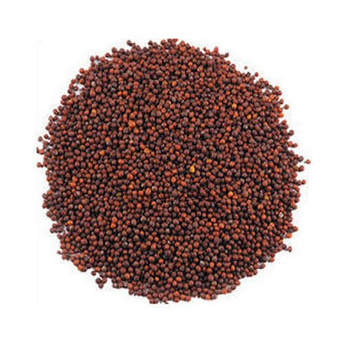

मोहरी विषयी माहिती

जमीन
– मध्यम ते भारी
पूर्वमशागत
- ३ वर्षातून एकदा नांगरट, २ कुळवाच्या पाळ्या
पेरणीची वेळ
– ऑक्टोबरचा १ ला पंधरवडा
पेरणीचे अंतर
– ४५ X १५ सें.मी
हेक्टरी बियाणे
– ५ किलो
खते
(कि./हे) नत्र, स्फुरद व पालाश देण्याची वेळ – बागायती ५०:२५:० (अर्धे नत्र व संपूर्ण स्फुरद पेरणीच्या वेळी व
उरलेले अर्धे नत्र ३० ते ३५ दिवसांनी द्यावे.) कोरडवाहू :४०:२०:० संपूर्ण पेरणीच्या वेळी द्यावे.
विशेष माहिती
– पेरणी करताना वाळू मिसळणे आंतरपिक : गहू अधिक मोहरी (४:२ किंवा ६:२) मोहरी पिकासाठी ओलिताची सोय
असल्यास पहिले पाणी ५०-५५ दिवसांनी (शेंगा लागताना) व दूसरे पाणी ७०-७५ दिवसांनी (दाणे भरताना द्यावे.)
हेक्टरी उत्पादन
– बागायती : १२-१५ क्विं./हे , कोरडवाहू : ८-१० क्विं./हे